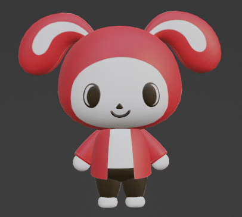

A LITTLE WORLD OF POSSIBILITIES
Two best friends.
One creative collection.
Character art, expressive poses, 3D models and playful references. Collected, organized, and ready to explore.
— distinct assets2 best friends100% source linked

Made for your next idea ✦Explore the collection
No matches. Try another search or filter.
About this collection & source credits
This is an independent reference library of Mikey and JJ from Maizen. It includes official website downloads and community-wiki references. Merchandise photos and illustrations are labeled separately from character poses and textures.
Character art remains the property of Maizen and the respective rights holders. Being downloadable does not make an asset openly licensed. Each asset links to its source; no blanket reuse license is claimed.
Download the JSON catalog · Full source index · Collection checks